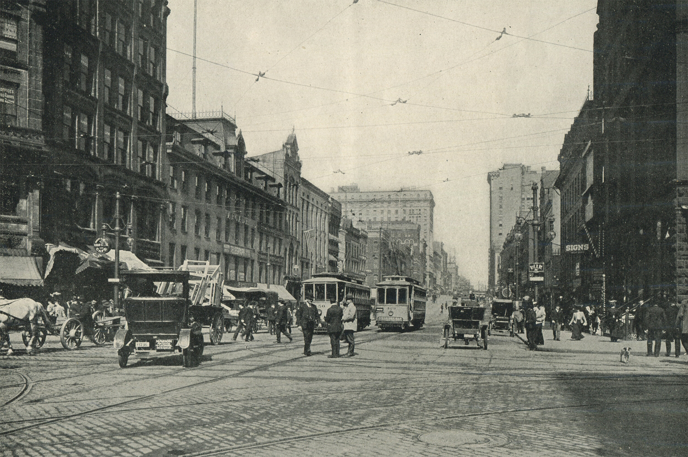

The City
Rochester is a city in the U.S. state of New York, the seat of Monroe County, and the third-most populous in the state after New York City and Buffalo with a population of 211,328 in 2020. The city of Rochester forms the core of a larger metropolitan area with a population of 1 million people, across six counties, which in turn is part of the larger Western New York region that has a population of roughly two million. The city was one of the United States' first boomtowns, initially due to the fertile Genesee River Valley, which gave rise to numerous flour mills, and then as a manufacturing center, which spurred further rapid population growth.
The State
Native Americans came to the area now called New York about 5,000 years ago. Thousands of years later, their descendants included Native American tribes such as the Mohawk, Cayuga, Oneida, and Seneca. In 1624 the Dutch established a colony on what’s now Manhattan Island called New Amsterdam. It was renamed New York once the British took control of the area in 1664. But after the American Revolution in 1776, New York became a U.S. colony, then a state in 1788. One year later, George Washington was sworn in as the United States’ first president in New York City, then the country’s capital. (It would move to Washington, D.C., the next year, in 1790.)
A Great Place to Live
A unique blend of natural and man-made resources and amenities give Rochester a quality of life that is second to none. Straddling the Genesee River between the Erie Canal and Lake Ontario, Rochester offers a natural beauty that is easily accessible by a network of parks, trails, boat launches and scenic overlooks. The city is divided into dozens of distinct neighborhoods and urban villages supported by an eclectic mix of stores and restaurants. Quality housing available at reasonable prices, well-paying jobs and a transportation system that minimizes traffic congestion combine with a wide variety of cultural institutions and entertainment options to make Rochester an easy place to enjoy a comfortable work-life balance. The city’s central location in Western New York provides residents a short drive to such destinations as the Niagara Falls, the Finger Lakes region and the Adirondack Mountains. Big cities, including New York, Toronto and Boston are also within a day’s drive.
A Great Place to Work
Rochester’s economy benefits from many advantages, including an ample supply of fresh water from Lake Ontario and the pristine Finger Lakes, a central location among the population centers of the Northeastern United States and the innovative foundations laid by such firms as Kodak, Xerox and Bausch and Lomb. A host of colleges and universities, including the University of Rochester and the Rochester Institute of Technology, produce an educated workforce and generates cutting-edge research that drives the city’s innovation and technology sectors. Rochester is emerging as the imaging, optics and photonics capital of the world and in 2015 the White House announced that new Integrated Photonics Institute for Manufacturing Innovation would be located in Rochester. Other growing industries include food-and-beverage manufacturing, biotechnology and green innovation.